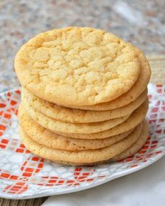

Basic Biscuits
This homemade biscuit recipe uses simple ingredients and baking powder as the leavening. The biscuits turn out golden brown and super tender inside.
Looking for a homemade biscuit recipe that's perfect for eginners and experienced cooks alike? Your search ends here. This tried-and-true recipe is beloved by the Allrecipes community because it's easy to make with just five ingredients, it calls for kitchen staples you probably already have on hand, and it's absolutely delicious.
Basic Biscuit Ingredients
Here's what you'll need to make this top-rated biscuit recipe:
- Flour: All-purpose flour holds the ingredients together. Also, the protein in flour (when combined with moisture and heat) creates gluten, which provides structure.
- Powder: Baking powder, not yeast, is used as a leavener in this easy biscuit recipe. It causes the dough to expand, giving the biscuits volume and texture.
- Salt: Salt acts as a flavor enhancer and it strengthens the protein in the dough.
- Shortening: Shortening is made of purely fat, unlike butter which contains water and milk solids. This means it's better at reducing (or "shortening!") gluten strands, resulting in a soft and crumbly biscuit.
- Milk: Cold milk adds moisture, flavor, and structure to the biscuit dough.
How to Make Biscuits
You'll find the full recipe below, but here's a brief overview of what you can expect:
- Prepare the Dough: Sift the dry ingredients into a large bowl. Cut in the shortening, then add the milk. Mix until the dough is soft and doesn't stick to the side of the bowl.
- Knead and Roll: Turn the dough out onto a lightly floured surface and knead briefly. Roll the dough into an even sheet that's about ½-inch thick.
- Cut and Bake: Use a lightly floured biscuit cutter to cut out the biscuits. Place the cut biscuits on an ungreased baking sheet. Re-roll the dough, repeating the cutting process, until all the dough is gone. Bake until golden brown.
What to Serve With Biscuit
Top your biscuits with homemade sausage gravy, jam, honey butter, or the spread of your choice. You can also pair them with breakfast meats — such as bacon, sausage, or chicken — or serve them with a hearty soup or stew (you can't go wrong with a classic beef stew).
Ingredients
- 2 cups all-purpose flour
- 1 tablespoon baking powder
- ½ teaspoon salt
- ½ cup shortening
- ¾ cup cold milk
STEP 1
Gather all ingredients and preheat oven to 450 degrees F (230 degrees C).
STEP 2
In a large mixing bowl sift together flour, baking powder and salt. Cut in shortening with fork or pastry blender until mixture resembles coarse crumbs.
STEP 3
Pour milk into flour mixture while stirring with a fork. Mix in milk until dough is soft, moist and pulls away from the side of the bowl.
STEP 4
Turn dough out onto a lightly floured surface and knead dough briefly, 5 to 7 times.
STEP 5
Roll dough out into a 1/2 inch thick sheet and cut out biscuits with a floured cookie cutter. Press together unused dough and repeat rolling and cutting procedure.
STEP 6
Place biscuits on ungreased baking sheets and bake in preheated oven until golden brown, about 10 minutes.
STEP 7
Enjoy!